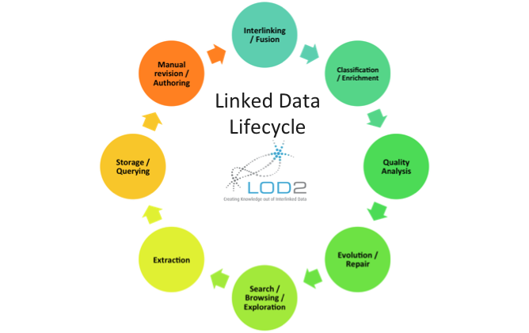
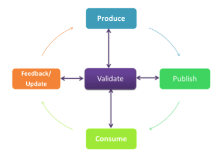
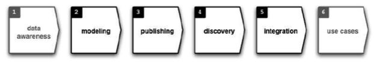

The process of providing linked data is often characterised as a Linked Data lifecycle in which data is created, reusing other data sources, prepared and then made accessible for use. The new data can then become one of a number of data sources used in the preparation of further datasets. This illustrates the cyclic nature of linked data creation and publishing. Before looking in more detail at different perspectives on the stages of the linked data lifecycle, we will recap the four Linked Data Principles introduced in Chapter 1. In summary, these principles are as follows:
1) Use URIs as names for things.
2) Use HTTP URIs so that users can look up those names.
3) When someone looks up a URI, provide useful information, using the standards (RDF*, SPARQL).
4) Include links to other URIs, so that users can discover more things.
As described in Chapter 1, a clear motivation for these principles is to publish “things” as URIs in way that is accessible (principle 2), useful (principle 3) and connects to other published things (principle 3). Essentially this means publishing data in a way that enhances its practical value and facilitates the use of that dataset as input to other datasets. This therefore creates a cycle in which data is created, published and then used in the creation of new data.
Different ways of understanding the linked data lifecycle and its constituent steps have been proposed. Sören Auer [1] proposes an eight stage linked data lifecycle. This involves searching or finding sources from which data can be extracted and stored, interconnecting these sources of data, establishing the quality of the new dataset, maintaining the data as it evolves and making it available as a data source for further browsing, search or exploration.

Figure 1: Sören Auer (2011) “The Semantic Data Web” [1].
The linked data lifecycle proposed by José M. Alvarez compresses this to four cyclical stages: Produce, Publish, Consume and Feedback/Update. A process of validation may be applied to any or each of these four stages.

Figure 2: José M. Alvarez. (2012) “My Linked Data Lifecycle” [2]
Finally, Michael Hausenblas presents a linked data life cycle in which the four central stages cover similar processes in which data is modelled, published, discovered and then integrated with other sources of data.

Figure 3: Michael Hausenblas (2011) “Linked Data lifecycle” [3]
In the following sections we will focus on three main stages that can be found throughout the various formulations of the linked data lifecycle. These three stages can also be mapped to the linked data principles.
Creating Linked Data: This involves data extraction, the creation of HTTP URIs and vocabulary selection. This relates to linked data principles 1 and 2 as it involves finding or creating HTTP URI names for things.
Interlinking Linked Data: This involves finding and expressing associations across datasets. This relates to linked data principle 3 as it involves providing links to other things.
Publishing Linked Data: This involves creating metadata about a dataset and making the dataset available for use. It therefore relates to linked data principle 3 in that it ensures useful information is returned about the dataset.